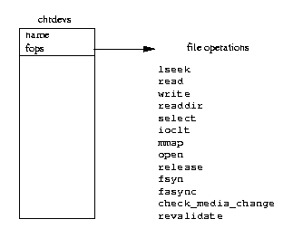
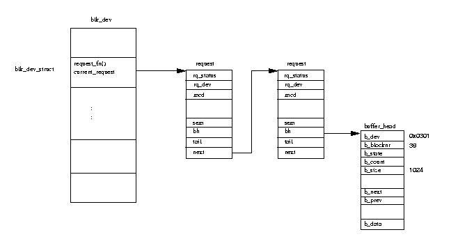
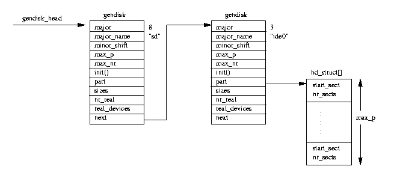
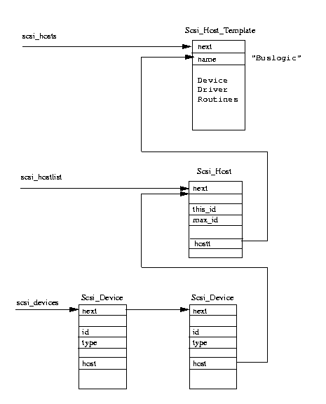

Table of Contents,
Show Frames,
No Frames

One of the purposes of an operating system is to hide the peculiarities
of the system's hardware
devices from its users.
For example the Virtual File System presents a uniform view of the mounted
filesystems irrespective of the underlying physical devices.
This chapter describes how the Linux kernel manages the physical devices in
the system.
The CPU is not the only intelligent device in the system, every physical
device has its own hardware controller. The keyboard, mouse and serial ports
are controlled by a SuperIO chip, the IDE disks by an IDE controller, SCSI disks by a SCSI
controller and so on.
Each hardware controller has its own control and status registers (CSRs)
and these differ between devices.
The CSRs for an Adaptec 2940 SCSI controller are completely different from
those of an NCR 810 SCSI controller.
The CSRs are used to start and stop the device, to initialize it and to diagnose
any problems with it.
Instead of putting code to manage the hardware controllers in the
system into every application, the code is kept in the Linux kernel.
The software that handles or manages a hardware controller is known as a device
driver.
The Linux kernel device drivers are, essentially, a shared library of privileged,
memory resident, low level hardware handling routines.
It is Linux's device drivers that handle the peculiarities of the devices they
are managing.
One of the basic features of is that it abstracts the handling of devices.
All hardware devices look like regular files; they can be opened, closed, read and
written using the same, standard, system calls that are used to manipulate files.
Every device in the system is represented by a device special file, for example the first
IDE disk in the system is represented by /dev/hda.
For block (disk) and character devices, these device special files are created by the mknod command
and they describe the device using major and minor device numbers.
Network devices are also represented by device special files but they are created by Linux as it finds and
initializes the network controllers in the system.
All devices controlled by the same device driver have a common major device number.
The minor device numbers are used to distinguish between different devices and their
controllers, for example each partition on the primary IDE disk has a different minor device number.
So, /dev/hda2, the second partition of the primary IDE disk has a major number of 3 and
a minor number of 2.
Linux maps the device special file passed in system calls (say to mount a file system on a
block device) to the device's device driver using the major device number and a number of system tables, for example
the character device table, chrdevs
.
Linux supports three types of hardware device: character, block and network.
Character devices are read and written directly without buffering, for example the system's
serial ports /dev/cua0 and /dev/cua1.
Block devices can only be written to and read from in multiples of the block size, typically
512 or 1024 bytes.
Block devices are accessed via the buffer cache and may be randomly accessed, that is to say,
any block can be read or written no matter where it is on the device.
Block devices can be accessed via their device special file but more commonly they are accessed via the file system.
Only a block device can support a mounted file system.
Network devices are accessed via the BSD socket interface and the networking subsytems described in the
Networking chapter (Chapter network-chapter).
There are many different device drivers in the Linux kernel (that is one of
Linux's strengths) but they all share some common attributes:
- kernel code
- Device drivers are part of the kernel and, like
other code within the kernel, if they go wrong they can seriously
damage the system.
A badly written driver may even crash the system, possibly corrupting
file systems and losing data,
- Kernel interfaces
- Device drivers must provide a standard
interface to the Linux kernel or to the subsystem that they are part
of. For example, the terminal driver provides a file I/O interface
to the Linux kernel and a SCSI device driver provides a SCSI device
interface to the SCSI subsystem which, in turn, provides both
file I/O and buffer cache interfaces to the kernel.
- Kernel mechanisms and services
- Device drivers make use of
standard kernel services such as memory allocation, interrupt delivery
and wait queues to operate,
- Loadable
- Most of the Linux device drivers can be loaded on demand as kernel
modules when
they are needed and unloaded when they are no longer being used. This makes the
kernel very adaptable and efficient with the system's resources,
- Configurable
- Linux device drivers can be built into the kernel. Which
devices are built is configurable when the kernel is compiled,
- Dynamic
- As the system boots and each device driver is initialized it looks
for the hardware devices that it is controlling.
It does not matter if the device being controlled by a particular device driver
does not exist. In
this case the device driver is simply redundant and causes no harm apart from
occupying a little of the system's memory.
8.1 Polling and Interrupts
Each time the device is given a command, for example ``move the read head to sector
42 of the floppy disk'' the device driver has a choice as to how it finds out that the
command has completed.
The device drivers can either poll the device or they can use interrupts.
Polling the device usually means reading its status register every so often until the device's
status changes to indicate that it has completed the request.
As a device driver is part of the kernel it would be disasterous if a driver were to
poll as nothing else in the kernel would run until the device had completed the request.
Instead polling device drivers use system timers to have the kernel call a routine within
the device driver at some later time.
This timer routine would check the status of the command and this is exactly how Linux's floppy
driver works.
Polling by means of timers is at best approximate, a much more efficient method is to use interrupts.
An interrupt driven device driver is one where the hardware device being controlled will
raise a hardware interrupt whenever it needs to be serviced.
For example, an ethernet device driver would interrupt whenever it receives an ethernet
packet from the network.
The Linux kernel needs to be able to deliver the interrupt from the hardware device to
the correct device driver.
This is achieved by the device driver registering its usage of the interrupt with the
kernel.
It registers the address of an interrupt handling routine and the interrupt number
that it wishes to own.
You can see which interrupts are being used by the device drivers, as well
as how many of each type of interrupts there have been, by looking at /proc/interrupts:
0: 727432 timer
1: 20534 keyboard
2: 0 cascade
3: 79691 + serial
4: 28258 + serial
5: 1 sound blaster
11: 20868 + aic7xxx
13: 1 math error
14: 247 + ide0
15: 170 + ide1
This requesting of interrupt resources is done at driver initialization time.
Some of the interrupts in the system are fixed, this is a legacy of the IBM PC's
architecture.
So, for example, the floppy disk controller always uses interrupt 6.
Other interrupts, for example the interrupts from PCI devices are dynamically
allocated at boot time.
In this case the device driver must first discover the interrupt number (IRQ) of
the device that it is controlling before it requests ownership of that interrupt.
For PCI interrupts Linux supports standard PCI BIOS callbacks to determine information
about the devices in the system, including their IRQ numbers.
How an interrupt is delivered to the CPU itself is architecture dependent but on most architectures the
interrupt is delivered in a special mode that stops other interrupts from happening in the
system.
A device driver should do as little as possible in its interrupt handling routine so that
the Linux kernel can dismiss the interrupt and return to what it was doing before it
was interrupted.
Device drivers that need to do a lot of work as a result of receiving an interrupt
can use the kernel's bottom half handlers or task queues to queue routines to be called later on.
8.2 Direct Memory Access (DMA)
Using interrupts driven device drivers to transfer data to or from hardware devices works well when the
amount of data is reasonably low.
For example a 9600 baud modem can transfer approximately one character every millisecond (1/1000 'th second).
If the interrupt latency, the amount of time that it takes between the hardware device raising the
interrupt and the device driver's interrupt handling routine being called, is low (say 2 milliseconds)
then the overall system impact of the data transfer is very low.
The 9600 baud modem data transfer would only take 0.002% of the CPU's processing time.
For high speed devices, such as hard disk controllers or ethernet devices the data transfer rate is a lot
higher.
A SCSI device can transfer up to 40 Mbytes of information per second.
Direct Memory Access, or DMA, was invented to solve this problem.
A DMA controller allows devices to transfer data to or from the system's memory without the intervention of the
processor.
A PC's ISA DMA controller has 8 DMA channels of which 7 are available for use by the device drivers.
Each DMA channel has associated with it a 16 bit address register and a 16 bit count register.
To initiate a data transfer the device driver sets up the DMA channel's address and count registers together
with the direction of the data transfer, read or write.
It then tells the device that it may start the DMA when it wishes.
When the transfer is complete the device interrupts the PC.
Whilst the transfer is taking place the CPU is free to do other things.
Device drivers have to be careful when using DMA.
First of all the DMA controller knows nothing of virtual memory, it only has access to the physical memory
in the system.
Therefore the memory that is being DMA'd to or from must be a contiguous block of physical memory.
This means that you cannot DMA directly into the virtual address space of a process.
You can however lock the process's physical pages into memory, preventing them from being swapped out
to the swap device during a DMA operation.
Secondly, the DMA controller cannot access the whole of physical memory.
The DMA channel's address register represents the first 16 bits of the DMA address, the next 8 bits come
from the page register.
This means that DMA requests are limited to the bottom 16 Mbytes of memory.
DMA channels are scarce resources, there are only 7 of them, and they cannot be shared between device drivers.
Just like interrupts, the device driver must be able to work out which DMA channel it should use.
Like interrupts, some devices have a fixed DMA channel.
The floppy device, for example, always uses DMA channel 2.
Sometimes the DMA channel for a device can be set by jumpers; a number of ethernet devices use this technique.
The more flexible devices can be told (via their CSRs) which DMA channels to use and, in this case, the device
driver can simply pick a free DMA channel to use.
Linux tracks the usage of the DMA channels using a vector of dma_chan data structures (one per
DMA channel).
The dma_chan data structure contains just two fields, a pointer to a string describing the owner of
the DMA channel and a flag indicating if the DMA channel is allocated or not.
It is this vector of dma_chan data structures that is printed when you cat /proc/dma.
8.3 Memory
Device drivers have to be careful when using memory.
As they are part of the Linux kernel they cannot use virtual memory.
Each time a device driver runs, maybe as an interrupt is received or as a bottom half
or task queue handler is scheduled,
the current process may change.
The device driver cannot rely on a particular process running even if it is doing work on its behalf.
Like the rest of the kernel, device drivers use data structures to keep track of the device that it is controlling.
These data structures can be statically allocated, part of the device driver's code, but that would be wasteful as
it makes the kernel larger than it need be.
Most device drivers allocate kernel, non-paged, memory to hold their data.
Linux provides kernel memory allocation and deallocation routines and it is these that the device drivers use.
Kernel memory is allocated in chunks that are powers of 2.
For example 128 or 512 bytes, even if the device driver asks for less.
The number of bytes that the device driver requests is rounded up to the next block size boundary.
This makes kernel memory deallocation easier as the smaller free blocks can be recombined into bigger blocks.
It may be that Linux needs to do quite a lot of extra work when the kernel memory is requested.
If the amount of free memory is low, physical pages may need to be discarded or written to the swap
device.
Normally, Linux would suspend the requestor, putting the process onto a wait queue until there
is enough physical memory.
Not all device drivers (or indeed Linux kernel code) may want this to happen and so the kernel memory
allocation routines can be requested to fail if they cannot immediately allocate memory.
If the device driver wishes to DMA to or from the allocated memory it can also specify that the memory
is DMA'able.
This way it is the Linux kernel that needs to understand what constitutes DMA'able memory for this system, and
not the device driver.
8.4 Interfacing Device Drivers with the Kernel
The Linux kernel must be able to interact with them in standard ways.
Each class of device driver, character, block and network, provides common
interfaces that the kernel uses when requesting services from them.
These common interfaces mean that the kernel can treat often very different
devices and their device drivers absolutely the same.
For example, SCSI and IDE disks behave very differently but the Linux kernel
uses the same interface to both of them.
Linux is very dynamic, every time a Linux kernel boots it may encounter
different physical devices and thus need different device drivers.
Linux allows you to include device drivers at kernel build time via its
configuration scripts.
When these drivers are initialized at boot time they may not discover any
hardware to control.
Other drivers can be loaded as kernel modules when they are needed.
To cope with this dynamic nature of device drivers, device drivers
register themselves with the kernel as they are initialized.
Linux maintains tables of registered device drivers as part of its interfaces
with them.
These tables include pointers to routines and information that support
the interface with that class of devices.
8.4.1 Character Devices

Figure 8.1: Character Devices
Character devices, the simplest of Linux's devices, are accessed as files,
applications use standard system calls to open them, read from them, write
to them and close them exactly as if the device were a file.
This is true even if the device is a modem being used by the PPP daemon
to connect a Linux system onto a network.
As a character device is initialized its device driver registers itself with
the Linux kernel by adding an entry into the
chrdevs
vector of device_struct data structures.
The device's major device identifier (for example 4 for the tty
device) is used as an index into this vector.
The major device identifier for a device is fixed.
Each entry in the chrdevs vector, a
device_struct data structure contains two elements; a pointer to the
name of the registered device driver and a pointer to a block of file
operations.
This block of file operations is itself the addresses of routines within the
device character device driver each of which handles specific file operations
such as open, read, write and close.
The contents of /proc/devices for character devices is taken from
the chrdevs vector.
When a character special file representing a character device (for example
/dev/cua0) is opened the kernel must set things up so that the correct
character device driver's file operation routines will be called.
Just like an ordinairy file or directory, each device special file is
represented by a VFS inode .
The VFS inode for a character special file, indeed for all device special
files, contains both the major and minor identifiers for the device.
This VFS inode was created by the underlying filesystem, for example
EXT2, from information in the real filesystem when the device
special file's name was looked up.
Each VFS inode has associated with it a set of file operations and these are
different depending on the filesystem object that the inode represents.
Whenever a VFS inode representing a character special file is created,
its file operations are set to the default character device operations
.
This has only one file operation, the open file operation.
When the character special file is opened by an application the generic
open file operation
uses the
device's major identifier as an index into the
chrdevs vector to retrieve the file
operations block for this particular device.
It also sets up the file data structure describing this character
special file, making its file operations pointer point to those of the
device driver.
Thereafter all of the applications file operations will be mapped to
calls to the character devices set of file operations.
8.4.2 Block Devices
Block devices also support being accessed like files.
The mechanisms used to provide the correct set of file operations for
the opened block special file are very much the same as for character
devices.
Linux maintains the set of registered block devices as the
blkdevs
vector.
It, like the chrdevs vector, is indexed
using the device's major device number.
Its entries are also device_struct data structures.
Unlike character devices, there are classes of block devices.
SCSI devices are one such class and IDE devices are another.
It is the class that registers itself with the Linux kernel and provides
file operations to the kernel.
The device drivers for a class of block device provide class specific
interfaces to the class.
So, for example, a SCSI device driver has to provide interfaces to the
SCSI subsystem which the SCSI subsystem uses to provide file operations
for this device to the kernel.
Every block device driver must provide an interface to the buffer cache
as well as the normal file operations interface.
Each block device driver fills in its entry in the
blk_dev vector
of blk_dev_struct data structures
.
The index into this vector is, again, the device's major number.
The blk_dev_struct data structure consists of the address of a
request routine and a pointer to a list of request data structures,
each one representing a request from the buffer cache for the driver to
read or write a block of data.

Figure 8.2: Buffer Cache Block Device Requests
Each time the buffer cache wishes to read or write a block of data to or
from a registered device it adds a request data structure onto its
blk_dev_struct.
Figure 8.2 shows that each request has a pointer to one or more buffer_head data structures,
each one a request to read or write a block of data.
The buffer_head structures are locked (by the buffer cache) and there
may be a process waiting on the block operation to this buffer to complete.
Each request structure is allocated from a static list, the
all_requests
list.
If the request is being added to an empty request list, the driver's
request function is called to start processing the request queue.
Otherwise the driver will simply process every request on the request
list.
Once the device driver has completed a request it must remove each of the
buffer_head structures from the request structure, mark them as
up to date and unlock them.
This unlocking of the buffer_head will wake up any process that has
been sleeping waiting for the block operation to complete.
An example of this would be where a file name is being resolved and the
EXT2 filesystem must read the block of data that contains the
next EXT2 directory entry from the block device that holds the
filesystem.
The process sleeps on the buffer_head that will contain the directory
entry until the device driver wakes it up.
The request data structure is marked as free so that it can be used
in another block request.
8.5 Hard Disks
Disk drives provide a more permanent method for storing data, keeping it on spinning disk platters.
To write data, a tiny head magnetizes minute particles on the platter's surface.
The data is read by a head, which can detect whether a particular minute particle is magnetized.
A disk drive consists of one or more platters, each made of finely polished glass or ceramic
composites and coated with a fine layer of iron oxide.
The platters are attached to a central spindle and spin at a constant speed that can vary between
3000 and 10,000 RPM depending on the model.
Compare this to a floppy disk which only spins at 360 RPM.
The disk's read/write heads are responsible for reading and writing data and there is a pair for
each platter, one head for each surface.
The read/write heads do not physically touch the surface of the platters, instead they float on
a very thin (10 millionths of an inch) cushion of air.
The read/write heads are moved across the surface of the platters by an actuator.
All of the read/write heads are attached together, they all move across the surfaces of the
platters together.
Each surface of the platter is divided into narrow, concentric circles called tracks.
Track 0 is the outermost track and the highest numbered track is the track closest to the
central spindle.
A cylinder is the set of all tracks with the same number.
So all of the 5th tracks from each side of every platter in the disk is known as cylinder 5.
As the number of cylinders is the same as the number of tracks, you often see disk geometries
described in terms of cylinders.
Each track is divided into sectors.
A sector is the smallest unit of data that can be written to or read from
a hard disk and it is also the disk's block
size.
A common sector size is 512 bytes and the sector size was set when the disk was formatted, usually
when the disk is manufactured.
A disk is usually described by its geometry, the number of cylinders, heads and sectors.
For example, at boot time Linux describes one of my IDE disks as:
hdb: Conner Peripherals 540MB - CFS540A, 516MB w/64kB Cache, CHS=1050/16/63
This means that it has 1050 cylinders (tracks), 16 heads (8 platters) and 63 sectors per
track.
With a sector, or block, size of 512 bytes this gives the disk a storage capacity of 529200 bytes.
This does not match the disk's stated capacity of 516 Mbytes as some of the sectors are used for
disk partitioning information.
Some disks automatically find bad sectors and re-index the disk to work around them.
Hard disks can be further subdivided into partitions.
A partition is a large group of sectors allocated for a particular purpose.
Partitioning a disk allows the disk to be used by several operating system or for several purposes.
A lot of Linux systems have a single disk with three partitions; one containing a DOS filesystem,
another an EXT2 filesystem and a third for the swap partition.
The partitions of a hard disk are described by a partition table; each entry describing where the partition
starts and ends in terms of heads, sectors and cylinder numbers.
For DOS formatted disks, those formatted by fdisk, there are four primary disk partitions.
Not all four entries in the partition table have to be used.
There are three types of partition supported by fdisk, primary, extended and logical.
Extended partitions are not real partitions at all, they contain any number of logical parititions.
Extended and logical partitions were invented as a way around the limit of four primary partitions.
The following is the output from fdisk for a disk containing two primary partitions:
Disk /dev/sda: 64 heads, 32 sectors, 510 cylinders
Units = cylinders of 2048 * 512 bytes
Device Boot Begin Start End Blocks Id System
/dev/sda1 1 1 478 489456 83 Linux native
/dev/sda2 479 479 510 32768 82 Linux swap
Expert command (m for help): p
Disk /dev/sda: 64 heads, 32 sectors, 510 cylinders
Nr AF Hd Sec Cyl Hd Sec Cyl Start Size ID
1 00 1 1 0 63 32 477 32 978912 83
2 00 0 1 478 63 32 509 978944 65536 82
3 00 0 0 0 0 0 0 0 0 00
4 00 0 0 0 0 0 0 0 0 00
This shows that the first partition starts at cylinder or track 0, head 1 and sector 1 and extends to
include cylinder 477, sector 32 and head 63.
As there are 32 sectors in a track and 64 read/write heads, this partition is a whole number of
cylinders in size.
fdisk alligns partitions on cylinder boundaries by default.
It starts at the outermost cylinder (0) and extends inwards, towards the spindle, for 478 cylinders.
The second partition, the swap partition, starts at the next cylinder (478) and extends to the
innermost cylinder of the disk.

Figure 8.3: Linked list of disks
During initialization Linux maps the topology of the hard disks in the system.
It finds out how many hard disks there are and of what type.
Additionally, Linux discovers how the individual disks have been partitioned.
This is all represented by a list of gendisk data structures pointed at by the gendisk_head
list pointer.
As each disk subsystem, for example IDE, is initialized it generates gendisk data structures representing
the disks that it finds.
It does this at the same time as it registers its file operations and adds its entry into the
blk_dev data structure.
Each gendisk data structure has a unique major device number and these match the major numbers of the
block special devices.
For example, the SCSI disk subsystem creates a single gendisk entry (``sd'') with a major number
of 8, the major number of all SCSI disk devices.
Figure 8.3 shows two gendisk entries, the first one for the SCSI disk subsystem and the second
for an IDE disk controller.
This is ide0, the primary IDE controller.
Although the disk subsystems build the gendisk entries during their initialization they are only
used by Linux during partition checking.
Instead, each disk subsystem maintains its own data structures which allow it to map device special
major and minor device numbers to partitions within physical disks.
Whenever a block device is read from or written to, either via the buffer cache or file operations, the
kernel directs the operation to the appropriate device using the major device number found in its
block special device file (for example /dev/sda2).
It is the individual device driver or subsystem that maps the minor device number to the real physical device.
The most common disks used in Linux systems today are Integrated Disk Electronic or IDE disks.
IDE is a disk interface rather than an I/O bus like SCSI.
Each IDE controller can support up to two disks, one the master disk and the other the slave disk.
The master and slave functions are usually set by jumpers on the disk.
The first IDE controller in the system is known as the primary IDE controller, the next the
secondary controller and so on.
IDE can manage about 3.3 Mbytes per second of data transfer to or from the disk and the maximum
IDE disk size is 538Mbytes.
Extended IDE, or EIDE, has raised the disk size to a maximum of 8.6 Gbytes and the data transfer
rate up to 16.6 Mbytes per second.
IDE and EIDE disks are cheaper than SCSI disks and most modern PCs contain one or more
on board IDE controllers.
Linux names IDE disks in the order in which it finds their controllers.
The master disk on the primary controller is /dev/hda and the slave disk is /dev/hdb.
/dev/hdc is the master disk on the secondary IDE controller.
The IDE subsystem registers IDE controllers and not disks with the Linux kernel.
The major identifier for the primary IDE controller is 3 and is 22 for the secondary IDE controller.
This means that if a system has two IDE controllers there will be entries for the IDE subsystem
at indices at 3 and 22 in the blk_dev and blkdevs
vectors.
The block special files for IDE disks reflect this numbering, disks /dev/hda and /dev/hdb,
both connected to the primary IDE controller, have a major identifier of 3.
Any file or buffer cache operations for the IDE subsystem operations on these block special files
will be directed to the IDE subsystem as the kernel uses the major identifier as an index.
When the request is made, it is up to the IDE subsystem to work out which IDE disk the request is for.
To do this the IDE subsystem uses the minor device number from the device special identifier, this
contains information that allows it to direct the request to the correct partition of the correct
disk.
The device identifier for /dev/hdb, the slave IDE drive on the primary IDE controller is (3,64).
The device identifier for the first partition of that disk (/dev/hdb1) is (3,65).
8.5.2 Initializing the IDE Subsystem
IDE disks have been around for much of the IBM PC's history.
Throughout this time the interface to these devices has changed.
This makes the initialization of the IDE subsystem more complex than it might at first appear.
The maximum number of IDE controllers that Linux can support is 4.
Each controller is represented by an ide_hwif_t data structure in the
ide_hwifs vector.
Each ide_hwif_t data structure contains two ide_drive_t data structures, one per possible
supported master and slave IDE drive.
During the initializing of the IDE subsystem, Linux first looks to see if there is information about the
disks present in the system's CMOS memory.
This is battery backed memory that does not lose its contents when the PC is powered off.
This CMOS memory is actually in the system's real time clock device which always runs no matter if your
PC is on or off.
The CMOS memory locations are set up by the system's BIOS and tell Linux what IDE controllers and drives
have been found.
Linux retrieves the found disk's geometry from BIOS and uses the information to set up the ide_hwif_t
data structure for this drive.
More modern PCs use PCI chipsets such as Intel's 82430 VX chipset which includes a PCI EIDE controller.
The IDE subsystem uses PCI BIOS callbacks to locate the PCI (E)IDE controllers in the system.
It then calls PCI specific interrogation routines for those chipsets that are present.
Once each IDE interface or controller has been discovered, its ide_hwif_t is set up to reflect the
controllers and attached disks.
During operation the IDE driver writes commands to IDE command registers that exist in the I/O memory space.
The default I/O address for the primary IDE controller's control and status registers is 0x1F0 - 0x1F7.
These addresses were set by convention in the early days of the IBM PC.
The IDE driver registers each controller with the Linux block buffer cache and VFS, adding it to the
blk_dev and blkdevs vectors respectively.
The IDE drive will also request control of the appropriate interrupt.
Again these interrupts are set by convention to be 14 for the primary IDE controller and 15 for the secondary
IDE controller.
However, they like all IDE details, can be overridden by command line options to the kernel.
The IDE driver also adds a gendisk entry into the list of gendisk's discovered during boot for
each IDE controller found.
This list will later be used to discover the partition tables of all of the hard disks found at boot time.
The partition checking code understands that IDE controllers may each control two IDE disks.
8.5.3 SCSI Disks
The SCSI (Small Computer System Interface) bus is an efficient peer-to-peer
data bus that supports up to eight devices per bus, including one or more
hosts.
Each device has to have a unique identifier and this is usually set by
jumpers on the disks.
Data can be transfered synchronously or asynchronously between any two
devices on the bus and with 32 bit wide data transfers up to 40 Mbytes per
second are possible.
The SCSI bus transfers both data and state information between devices, and
a single transaction between an initiator and a target can
involve up to eight distinct phases.
You can tell the current phase of a SCSI bus from five signals from the
bus.
The eight phases are:
- BUS FREE
- No device has control of the bus and there are
no transactions currently happening,
- ARBITRATION
- A SCSI device has attempted to get control of
the SCSI bus, it does this by asserting its SCSI identifer
onto the address pins. The highest number SCSI identifier
wins.
- SELECTION
- When a device has succeeded in getting control of
the SCSI bus through arbitration it must now signal the target
of this SCSI request that it wants to send a command to it.
It does this by asserting the SCSI identifier of the target
on the address pins.
- RESELECTION
- SCSI devices may disconnect during the processing
of a request. The target may then reselect the initiator.
Not all SCSI devices support this phase.
- COMMAND
- 6,10 or 12 bytes of command can be transfered from
the initiator to the target,
- DATA IN, DATA OUT
- During these phases data is transfered
between the initiator and the target,
- STATUS
- This phase is entered after completion of all commands
and allows the target to send a status byte indicating
success or failure to the initiator,
- MESSAGE IN, MESSAGE OUT
- Additional information is transfered
between the initiator and the target.
The Linux SCSI subsystem is made up of two basic elements, each of which is represented by
data structures:
- host
- A SCSI host is a physical piece of hardware, a SCSI controller.
The NCR810 PCI SCSI controller is an example of a SCSI host.
If a Linux system has more than one SCSI controller of the same type, each instance
will be represented by a separate SCSI host.
This means that a SCSI device driver may control more than one instance of its controller.
SCSI hosts are almost always the initiator of SCSI commands.
- Device
- The most common set of SCSI device is a SCSI disk but the SCSI standard supports
several more types; tape, CD-ROM and also a generic SCSI device.
SCSI devices are almost always the targets of SCSI commands. These devices must be
treated differently, for example with removable media such as CD-ROMs or tapes, Linux needs
to detect if the media was removed.
The different disk types have different major device numbers, allowing Linux to direct
block device requests to the appropriate SCSI type.
Initializing the SCSI Subsystem
Initializing the SCSI subsystem is quite complex, reflecting the dynamic nature of SCSI buses and their
devices.
Linux initializes the SCSI subsystem at boot time; it finds the SCSI controllers (known as SCSI hosts) in the system
and then probes each of their SCSI buses finding all of their devices.
It then initializes those devices and makes them available to the rest of the Linux kernel via the
normal file and buffer cache block device operations.
This initialization is done in four phases:
First, Linux finds out which of the SCSI host adapters, or controllers, that were built into the
kernel at kernel build time have hardware to control.
Each built in SCSI host has a Scsi_Host_Template
entry in the builtin_scsi_hosts vector
The Scsi_Host_Template data structure contains pointers to routines that carry out SCSI host specific
actions such as detecting what SCSI devices are attached to this SCSI host.
These routines are called by the SCSI subsystem as it configures itself and they are part of the
SCSI device driver supporting this host type.
Each detected SCSI host, those for which there are real SCSI devices attached, has its
Scsi_Host_Template data structure added to the scsi_hosts list of
active SCSI hosts.
Each instance of a detected host type is represented by a Scsi_Host data structure held in the
scsi_hostlist list.
For example a system with two NCR810 PCI SCSI controllers would have two Scsi_Host entries in the
list, one per controller.
Each Scsi_Host points at the Scsi_Host_Template representing its device driver.

Figure 8.4: SCSI Data Structures
Now that every SCSI host has been discovered, the SCSI subsystem must find out what SCSI devices are
attached to each host's bus.
SCSI devices are numbered between 0 and 7 inclusively, each device's number or SCSI identifier being
unique on the SCSI bus to which it is attached.
SCSI identifiers are usually set by jumpers on the device.
The SCSI initialization code finds each SCSI device on a SCSI bus by sending it a TEST_UNIT_READY command.
When a device responds, its identification is read by sending it an ENQUIRY command.
This gives Linux the vendor's name and the device's model and revision names.
SCSI commands are represented by a Scsi_Cmnd data structure and these are passed to the device driver
for this SCSI host by calling the device driver routines within its Scsi_Host_Template data structure.
Every SCSI device that is found is represented by a Scsi_Device data structure, each of which points to
its parent Scsi_Host.
All of the Scsi_Device data structures are added to the scsi_devices
list.
Figure 8.4 shows how the main data structures relate to one another.
There are four SCSI device types: disk, tape, CD and generic.
Each of these SCSI types are individually registered with the kernel as different major block device types.
However they will only register themselves if one or more of a given SCSI device type has been found.
Each SCSI type, for example SCSI disk, maintains its own tables of devices.
It uses these tables to direct kernel block operations (file or buffer cache) to the correct device
driver or SCSI host.
Each SCSI type is represented by a Scsi_Device_Template data structure.
This contains information about this type of SCSI device and the addresses of routines to perform various
tasks.
The SCSI subsystem uses these templates to call the SCSI type routines for each type of SCSI device.
In other words, if the SCSI subsystem wishes to attach a SCSI disk device it will call the SCSI disk type
attach routine.
The Scsi_Type_Template data structures are added to the scsi_devicelist
list if one or more SCSI devices of that type have been detected.
The final phase of the SCSI subsystem initialization is to call the finish functions for each registered
Scsi_Device_Template.
For the SCSI disk type this spins up all of the SCSI disks that were found and then records their disk geometry.
It also adds the gendisk data structure representing all SCSI disks to the linked list of disks shown
in Figure 8.3.
Delivering Block Device Requests
Once Linux has initialized the SCSI subsystem, the SCSI devices may be used.
Each active SCSI device type registers itself with the kernel so that Linux can direct block
device requests to it.
There can be buffer cache requests via blk_dev or file operations
via blkdevs.
Taking a SCSI disk driver that has one or more EXT2 filesystem partitions as an example, how do kernel
buffer requests get directed to the right SCSI disk when one of its EXT2 partitions is mounted?
Each request to read or write a block of data to or from a SCSI disk partition results in a new
request structure being added to the SCSI disks current_request list in the blk_dev
vector.
If the request list is being processed, the buffer cache need not do anything else; otherwise
it must nudge the SCSI disk subsystem to go and process its request queue.
Each SCSI disk in the system is represented by a Scsi_Disk data structure.
These are kept in the rscsi_disks vector that is indexed using
part of the SCSI disk partition's minor device number.
For exmaple, /dev/sdb1 has a major number of 8 and a minor number of 17; this generates an index of 1.
Each Scsi_Disk data structure contains a pointer to the Scsi_Device data structure representing
this device.
That in turn points at the Scsi_Host data structure which ``owns'' it.
The request data structures from the buffer cache are translated into Scsi_Cmd structures describing
the SCSI command that needs to be sent to the SCSI device and this is queued onto the Scsi_Host
structure representing this device.
These will be processed by the individual SCSI device driver once the appropriate data blocks have been
read or written.
8.6 Network Devices
A network device is, so far as Linux's network subsystem is concerned, an entity that sends and receives
packets of data.
This is normally a physical device such as an ethernet card.
Some network devices though are software only such as the loopback device which is used for sending data to
yourself.
Each network device is represented by a device
data structure.
Network device drivers register the devices that they control with Linux during network initialization
at kernel boot time.
The device data structure contains information about the device and the addresses of functions that allow
the various supported network protocols to use the device's services.
These functions are mostly concerned with transmitting data using the network device.
The device uses standard networking support mechanisms to pass received data up to the appropriate protocol layer.
All network data (packets) transmitted and received are represented by sk_buff data structures, these are
flexible data structures that allow network protocol headers to be easily added and removed.
How the network protocol layers use the network devices, how they pass data back and forth using
sk_buff data structures is described in detail in the Networks chapter (Chapter networks-chapter).
This chapter concentrates on the device data structure and on how network devices are discovered
and initialized.
The device data structure contains information about the network device:
- Name
- Unlike block and character devices which have their device special files created
using the mknod command, network device special files appear spontaniously as the
system's network devices are discovered and initialized.
Their names are standard, each name representing the type of device that it is.
Multiple devices of the same type are numbered upwards from 0. Thus the ethernet
devices are known as /dev/eth0,/dev/eth1,/dev/eth2 and so on. Some common network
devices are:
|
/dev/ethN | Ethernet devices
|
|
/dev/slN | SLIP devices
|
|
/dev/pppN | PPP devices
|
|
/dev/lo | Loopback devices |
- Bus Information
- This is information that the device driver needs in order to control
the device. The irq number is the interrupt that this device is using.
The base address is the address of any of the device's control and status registers
in I/O memory. The DMA channel is the DMA channel number that this network device is using.
All of this information is set at boot time as the device is initialized.
- Interface Flags
- These describe the characteristics and abilities of the network device:
|
IFF_UP | Interface is up and running,
|
|
IFF_BROADCAST | Broadcast address in device is valid
|
|
IFF_DEBUG | Device debugging turned on
|
|
IFF_LOOPBACK | This is a loopback device
|
|
IFF_POINTTOPOINT | This is point to point link (SLIP and PPP)
|
|
IFF_NOTRAILERS | No network trailers
|
|
IFF_RUNNING | Resources allocated
|
|
IFF_NOARP | Does not support ARP protocol
|
|
IFF_PROMISC | Device in promiscuous receive mode, it will receive
|
|
| all packets no matter who they are addressed to
|
|
IFF_ALLMULTI | Receive all IP multicast frames
|
|
IFF_MULTICAST | Can receive IP multicast frames |
- Protocol Information
- Each device describes how it may be used by the network protocool layers:
- mtu
- The size of the largest packet that this network can transmit not including any
link layer headers that it needs to add. This maximum is used by the protocol layers,
for example IP, to select suitable packet sizes to send.
- Family
- The family indicates the protocol family that the device can support. The
family for all Linux network devices is AF_INET, the Internet address family.
- Type
- The hardware interface type describes the media that this network device is
attached to. There are many different types of media that Linux network devices
support. These include Ethernet, X.25, Token Ring, Slip, PPP and Apple Localtalk.
- Addresses
- The device data structure holds a number of addresses that are relevent
to this network device, including its IP addresses.
- Packet Queue
- This is the queue of sk_buff packets queued waiting to be transmitted on
this network device,
- Support Functions
- Each device provides a standard set of routines that protocol layers
call as part of their interface to this device's link layer. These include setup and
frame transmit routines as well as routines to add standard frame headers and collect
statistics. These statistics can be seen using the ifconfig command.
8.6.1 Initializing Network Devices
Network device drivers can, like other Linux device drivers, be built into the Linux kernel.
Each potential network device is represented by a device data structure within the
network device list pointed at by dev_base list pointer.
The network layers call one of a number of network device service routines whose addresses
are held in the device data structure if they need device specific work performing.
Initially though, each device data structure holds only the address of an initialization or probe
routine.
There are two problems to be solved for network device drivers.
Firstly, not all of the network device drivers built into the Linux kernel will have devices to control.
Secondly, the ethernet devices in the system are always called /dev/eth0, /dev/eth1 and so on, no
matter what their underlying device drivers are.
The problem of ``missing'' network devices is easily solved.
As the initialization routine for each network device is called, it returns a status indicating
whether or not it located an instance of the controller that it is driving.
If the driver could not find any devices, its entry in the device list pointed at by
dev_base is removed.
If the driver could find a device it fills out the rest of the device data structure with information
about the device and the addresses of the support functions within the network device driver.
The second problem, that of dynamically assigning ethernet devices to the standard /dev/ethN device
special files is solved more elegantly.
There are eight standard entries in the devices list; one for eth0, eth1 and so on to
eth7.
The initialization routine is the same for all of them, it tries each ethernet device driver built into
the kernel in turn until one finds a device.
When the driver finds its ethernet device it fills out the ethN device data structure,
which it now owns.
It is also at this time that the network device driver initializes the physical hardware that it
is controlling and works out which IRQ it is using, which DMA channel (if any) and so on.
A driver may find several instances of the network device that it is controlling and, in this case, it will take
over several of the /dev/ethN device data structures.
Once all eight standard /dev/ethN have been allocated, no more ethernet devices will be probed for.
File translated from TEX by TTH, version 1.0.
Top of Chapter,
Table of Contents,
Show Frames,
No Frames
© 1996-1999 David A Rusling copyright notice.